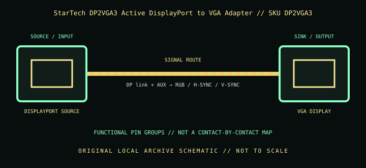

[ INDIVIDUAL COMPONENT // CABLES & ADAPTERS ]
StarTech DP2VGA3 Active DisplayPort to VGA Adapter
An active digital-to-analog dongle for connecting a DisplayPort computer to an analog VGA monitor or projector; direction is DP source to VGA display only.

IDENTIFICATION: Catalog SKU: DP2VGA3. Record the complete label, regional suffix, hardware model/revision, and cable length printed on the specimen; nearby model variants are not interchangeable by assumption.
Specifications & connector revisions
| Catalog subcategory | Display cables and adapters |
|---|---|
| Manufacturer / SKU | StarTech DP2VGA3 Active DisplayPort to VGA Adapter — DP2VGA3 |
| Connector ends / length | 20-pin full-size DisplayPort male source plug → DE-15 (HD-15) VGA female; approximately 100 mm (3.9 in) attached lead. |
| Protocol and revision | StarTech identifies a DisplayPort 1.2 active adapter, supporting analog output modes up to 2048 × 1152, 1920 × 1200, or 1920 × 1080 at 60 Hz (source/display timing dependent). Active conversion is required because VGA is analog RGBHV while DisplayPort is digital packetized video. |
| Signal path / pinout | DP carries digital video, auxiliary channel, and link control; the adapter performs digital-to-analog conversion to VGA RGB plus separate horizontal/vertical sync and DDC/EDID paths. VGA DE-15 includes analog RGB and grounds/sync/DDC; never treat it as a passive DP pinout or a VGA-to-DP converter. |
| Mode and bandwidth caveats | Analog image quality and stable maximum timing depend on the VGA cable, display, source EDID, and run length; StarTech lists testing with VGA extension cabling, but long or poor-quality analog runs can soften the image or cause ghosting. A 60 Hz mode is not an HDR/high-bandwidth digital path. |
Compatibility & direction
Use with a DisplayPort/DP++ source and VGA monitor, projector, or capture/display equipment. It needs no separate USB power according to the product family. Connect a VGA cable to the female DE-15 end and secure its thumbscrews without overtightening. It will not convert VGA source to DisplayPort display.
Handling & archival notes
Keep the stated source and sink ends in their specified direction; do not force keyed connectors or use this product as an assumed voltage/pinout substitute for a superficially similar cable. Support the tether during connection, keep contacts clean and dry, and avoid tight bends at molded strain reliefs.
For the archive, photograph both connector faces, labels, packaging SKU, length, and revision. If a mode is tested, record source model/GPU and firmware, sink model/firmware, intermediate adapters, cable run, resolution, refresh rate, chroma/HDR, and whether HDCP succeeds. Test results apply to that exact chain, not all variants.
Manufacturer and standards sources
- StarTech.com — DP2VGA3 DisplayPort to VGA adapterManufacturer product information and model-specific feature listing.
- StarTech.com — DP2VGA3 datasheet (PDF)Manufacturer datasheet for connector types, modes, and dimensions.
Maximum modes are source-, sink-, firmware-, signal-path-, and revision-dependent. Manufacturer documentation for the exact SKU and hardware model takes precedence over family names and connector appearance.